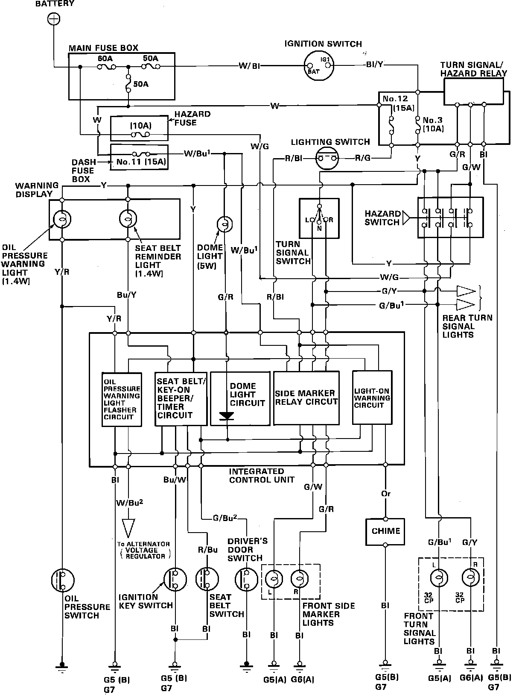

Operation CHARM
: Car repair manuals for everyone.
Home
>>
Acura
>>
1988
>>
Integra L4-1590cc 1.6L DOHC FI
>>
Repair and Diagnosis
>>
Lighting and Horns
>>
Relays and Modules - Lighting and Horns
>>
Interior Lighting Module
>>
Diagrams
>>
Electrical Diagrams
>>
Integrated Control Unit
Integrated Control Unit
Fig. 10 Integrated Control Unit Wiring Diagram:
